Matt Timmermans, September 1999
This page describes the operation of the bijective arithmetic compressor. This compressor has the nifty property that any file at all can be decompressed and then compressed back to its original form, in addition to the normal property that any file can be compressed and then decompressed back to its original form.
One of the techniques used to accomplish this is a better way of indicating the end of the compressed stream.
My simple bijective arithmetic compressor, with commented source, is here: biacode.zip
David A. Scott's bijective Huffman compressor (the first bijective compressor known) can be found on David's Compression Page
The rest of this page describes the operation of the bijective arithmetic compressor in my own strange way -- it starts from the beginning and requires no prior knowledge of compression techniques, but it goes way too fast:
We begin with a source of symbols, drawn from a known alphabet, and we are given the task of writing down the symbols as the source produces them.
We are, in reality, a computer program, and so "writing" consists, for us, of producing a sequence of bits. We are also a compression program, and so our user expects us to write these symbols using as few bits as possible.
Let us say that our alphabet consists of the 8 symbols ABCDEFGH. Each time we get a symbol from the source, then, there are 8 possibilities.
Now, a bit, like the ones we must write, is a unit of information. A bit can be either 0 or 1 -- there are two possibilities. Writing a bit, therefore, conveys exactly enough information to distinguish between two possibilities. This is not enough information to uniquely identify every symbol in our alphabet, and so it is clear that we will (at least sometimes) be required to write more than one bit for each symbol of input.
We are left considerable leeway in how to do this, however.
Given an arbitrary symbol x, for example, we may adopt the following strategy:
As you can see, since a bit provides exactly enough information to distinguish between two possibilities, we can use each bit we write the distinguish between two different groups of symbols. If the group we identify contains more than one symbol, we must divide it into two smaller groups and write another bit, etc., until a single symbol is identified.
The sequence of bits we write for each symbol is that symbol's "code". Let's have a look at these:
| Symbol | Code | Code Length |
| A | 00 | 2 |
| B | 01 | 2 |
| C | 100 | 3 |
| D | 101 | 3 |
| E | 1100 | 4 |
| F | 1101 | 4 |
| G | 1110 | 4 |
| H | 1111 | 4 |
Before we can ask ourselves just how efficient this method of
encoding is, relative to the other possibilities, we have to
figure out just how much freedom we have in choosing encodings.
Clearly, by changing the way we divide the symbols into groups,
we can change how many bits we write for each symbol. It is
required, however, that each symbol can be uniquely identified in
the end. Given an N symbol alphabet, with symbols from 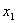 through  , this imples
that:
, this imples
that:
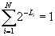
Where 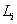is the code length of symbol 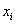.
With our example, this expands to 2*1/4 + 2*1/8 +4*1/16 = 1/2 + 1/4 + 1/4 = 1, and we can see that it is true.
So how efficient is this encoding? It depends on how common each of the symbols is, or to put it another way, for each possible symbol, how likely is it that a symbol from the source is that symbol?
If all symbols are equally likely, then our average code length is (4*4+2*3+2*2)/8 = 26/8= 3.25 bits. If each symbol is equally likely, then, our encoding is certainly not the best we can do, because an encoding exists that uses only 3 bits per symbol ( 8*1/8 = 1).
But what if A's and B's are more common than the other symbols? Our encoding uses 2 bits to encode A or B, but spends 4 bits to encode E, F, G, or H. If a symbol is more likely to be A or B than it is to be E, F, G, or H, however, then we will write two bits for a symbol more often than we write 4, and our average code length will be less than 3 bits per symbol.
So the efficiency of a particular encoding depends on the symbol probabilities. It is possible, in fact, to create an optimal encoding (the very best you can do) from the probabilities themselves, and the mapping is trivial.
If we assign each symbol a probability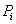, then the optimal encoding has 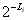= for every symbol. Since every symbol must be one of the symbols from our alphabet, the sum of all the symbol probabilities must be 1, and so the optimal encoding satisfies the constraint on the code lengths.
Returning to our example, we see that our encoding is optimal when the probabilities of A,B,C,D,E,F,G,H are 1/4,1/4,1/8.1/8,1/16,1/16,1/16,1/16. If we assume these probabilities and calculate our average code length (properly, weighting a symbol's length by its probability of occurring), we find that our average code length is 1/2*2+1/4*3+1/4*4 = 1+3/4+1 = 2.75 bits per symbol -- much better than 3.
Given that distribution of symbol probabilities, 2.75 bits per symbol (on average) is the very best you can do. In Shannon's information theory, 2.75 bits/symbol is the entropy of the source, and so the method of encoding that assigns optimal code lengths according to symbol probabilities is referred to as entropy encoding.
So far so good -- if we want to encode symbols from a source optimally, we just assign each symbol a code with length =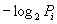, where is the probability of the symbol's occurrence.
But wait! This only really works if is a negative power of 2. Otherwise will not be an integer, so the optimal code length will not be an integer. An optimal encoding would then have to write a non-integral number of bits!
The good news is that, though it seems impossible to write, say 3.35 bits to encode a particular symbol, we can actually do it if we have lots of symbols to write.
The very clever trick that makes this possible is this:
To see how this works, let's examine our situation after we've seen all the symbols in the source, and made all of these "decisions that reduce the range of numbers we might write". We will be left having to write a number in some interval [x,x+R), where 0 <= x < x+R <= 1. R is the final size of this range.
The question is, then, "how many bits do we have to write before we get a number in this range"? The answer is always less than 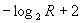 bits. Since a smaller final range means writing more bits, each of the range-reducing decisions we must make increases the number of bits we must write, but by how much?
If we begin with a range [x,x+R) and encode a symbol by deciding that we will finally write a number in the range [x+lR,x+(l+P)R), where 0 <= l < l+P < 1 and so x <= x+lR < x+(l+P)R <= x+R, then we increase the number of bits we must write from to 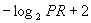. The difference is:
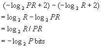
Oh, how marvellous!
If we have an alphabet of N symbols, with probabilities , and we have a current interval [x,x+R), we can divide the interval into N disjoint sub-intervals, one for each possible symbol , and we can set the size of each symbol's sub-interval to 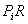. To encode a symbol, then, we simply decide that we will finally write a number in that symbol's sub-interval. We replace the current interval with the sub-interval corresponding to the appropriate symbol , which will result, in the end, in writing an optimal bits for that symbol -- even if is not an integer. Because the sub-intervals for possible symbols are disjoint, the person or program that will finally read the number we write can tell which symbol we encoded.
Real implementations of arithmetic encoding do not do all this math using very long binary numbers. Instead, numbers x and R that form the current interval [x,x+R) are stored as integers, scaled up by some power of 2 that keeps the interval size, R, in a workable range (typically (32768,65536] or so). Probabilities are stored as integers of slightly smaller size.
When the interval size decreases past its lower bound, the scaling power increases, and the integers x and R are doubled, until R returns to an appropriate size.
x, the lower bound on the interval, does not decrease as R does, and so repeated doubling would cause the integer to overflow. To prevent this, implementations write out the more significant bits of x as it increases.
No matter how big you let x get before you write out its higher order bits, the possibility exists that the bits you do writeout might need to change due to carry propogation. When your interval is 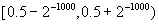, for example, it is still possible to finally write 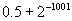. This causes 1000 bits of x to change. Various implementations have different ways of dealing with this. My arithmetic encoder doesn't output 1 bits, or the most recent 0 bit, immediately. Instead, it simply counts the number of 1's (say M) produced after the last zero. Upon producing another 0 bit, then, it will output a 0 followed by M ones. Upon receiving a 2 bit (i.e., a carry propogation), it will output a 1 followed by M zeros.
Arithmetic encoding, as presented so far, works just fine when we're writing an endless stream of symbols from some source to some sink. In real systems, though, this is often not the case -- we are typically compressing an input file of finite length, and we expect to be able to decompress this to recreate the same file. To make this possible, we need to tell the decompressor how many symbols we write.
There are two conventional approaches to this:
Both of these methods are only slightly wasteful when the input is of any significant size. Still, the rest of the arithmetic encoding process is so nearly perfect that we find this blatant waste of bits to be annoying, and we present a better way.
Recall that when we're finished encoding, we have to write a number in some interval [x,x+R), and we know that we have to write about bits to do this. Exactly how many bits it takes, however, depends on the bits we don't write.
Conventional arithmetic encoders will accept an input of finite length and write out a number with finite precision. By specifying bits, the encoder can make sure that the number it writes is in the required range no matter what the decoder thinks about the bits that follow -- if the encoder were to continue writing any number of 1's and zeros, the number would still be in the proper range.
We can do slightly better if we assume that unwritten bits are zero. An arithmetic encoder that adopts this approach will accept an input of finite length and write out a number of infinite precision that is "finitely odd". "Finitely odd" means that the right-most 1 bit is finitely far from the beginning of the output or, equivalently, that the number it writes is divisible by some negative power of 2.
In the "binary decimal" representation that an arithemtic encoder writes, a finitely odd number is either:
In any case, when the arithmetic encoder writes a finitely odd number, it simply omits the infinite zero tail, and the decoder assumes that unwritten bits are all zero.
When we're finished encoding, then, and we must write a number in [x,x+R), we write some finitely odd number in that range, but we write it with infinite precision. There are an infinite number of such numbers in any range, and we could encode any one of them. We can achieve better end handling by using the number we do write to tell the decoder where the end of file is. The procedure is as follows:
During our encoding, we will eventually arrive at the first place that the input might end, and we know that whether it ends or not, we will write a number in the range 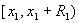. We simply decide that if the input does end here, we will write out the most even number in that range, resulting in the shortest possible output that identifies that range. Let's call this number 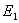. On the other hand, if the input does not end here, we simply continue encoding normally.
Eventually, we will arrive at the second place that the input
might end, and we know that whether it ends or not, we must write
a number in  .
Now we decide that if the input does end here, we will
write out the most even number in the range that is not. (we can't write
, of course,
because that would mean that means the file ends at the previous
possible position). This number will be 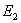. Otherwise we continue on.
.
Now we decide that if the input does end here, we will
write out the most even number in the range that is not. (we can't write
, of course,
because that would mean that means the file ends at the previous
possible position). This number will be 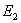. Otherwise we continue on.
Eventually, the input will actually end, and we will write out the most even number in the final range that does not indicate a previous end.
The complete algorithm does this:
Indicating the end of file in this way does not waste any bits at all, and has another interesting property. If every valid input is the prefix of a longer valid input, then any finitely odd number at all will decomress to a valid input, and that input will compress back to the very same finitely odd number, i.e., an arithmetic compressor like this is a bijection between its inputs and the finitely odd numbers.
Before going on to the next section, let's return whole-bit encoding, which we discussed first in the entropy coding section above. These are called "prefix-free" codes, because no symbol's bit-code is the prefix of any other. Every such encoding, including the popular Huffman encoding, is a special case of arithmetic encoding that limits the size of the range to negative powers of two, and so the same end treatment we use for arithmetic encoding works for these types of codes as well.
For prefix-free codes, however, the situation is much simpler than with arithmetic encoding in general, because there can be at most two end numbers reserved at any time:
In any case, by the time we get to a new ending position, we will have written at least one whole bit, and so 1000... will certainly not be reserved. At any end position, then, if 000.. is reserved, then 100... is always available for use.
Our compressor so far is a bijection from its valid inputs to the finitely odd numbers. Unfortunately, however, real compressors don't write finitely odd numbers -- they write files, where a file is a finite sequence of bytes, each consisting of 8 bits.
Even though our end handling is very efficient, we'd like to go one small step further and make our compressor a bijection from its inputs to files. This is where the bijective property becomes interesting, because then any file at all can be decompressed, even if it wasn't compressed to begin with. The decompressed file can the be compressed again to produce exactly the same file we started with.
To accomplish this, we use a trivial prefix-free encoding from files to finitely odd numbers. This is a prefix-free code that simply maps each 8-bit byte to itself, but we apply the whole-bit end treatment to make this encoding into a trivial bijection from files to finitely odd numbers. More importantly, it makes the trivial decoder into a bijection from finitely odd numbers to files.
To make a bijective arithmetic compressor then, we just need to do TrivialDecode(ArithmeticEncode(input)). The arithmetic encoder translates its input into a finitely odd number, and the trivial decoder translates this into a finite sequence of bytes. The corresponding bijective arithmetic decompressor is simply ArithmeticDecode(TrivialEncode(input)).